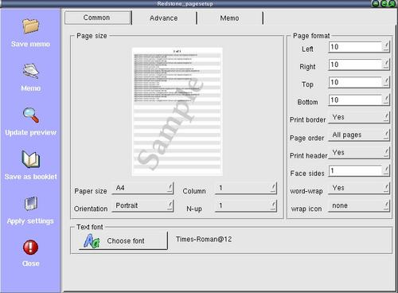

To format page before saving to postscript or pdf

Step 1 : Pull down the menu,"Options" --> "Page setup" to open the page format dialog.
Step 2 : Format the page as you like.You can do a preview with the new settings.
note : The preview is done by using a sample page.
Step 3 : Click "Apply settings" to save the settings.
Step 4 : Click "Close" to close the dialog.
note : The current directory of the xfgcommander is the current
directory of the saving location for all files saved.They will be highlighted
after you close a dialog or executed a menu command.